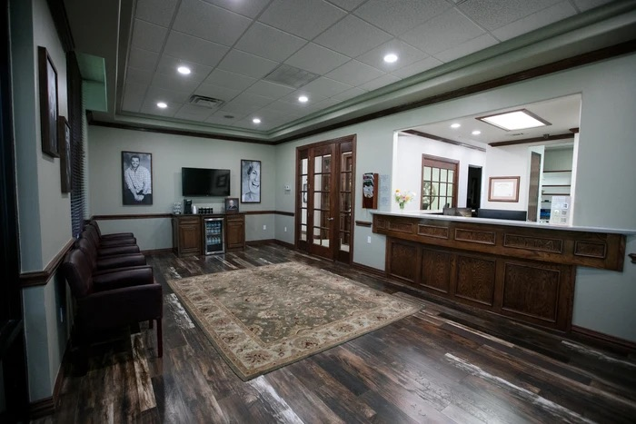
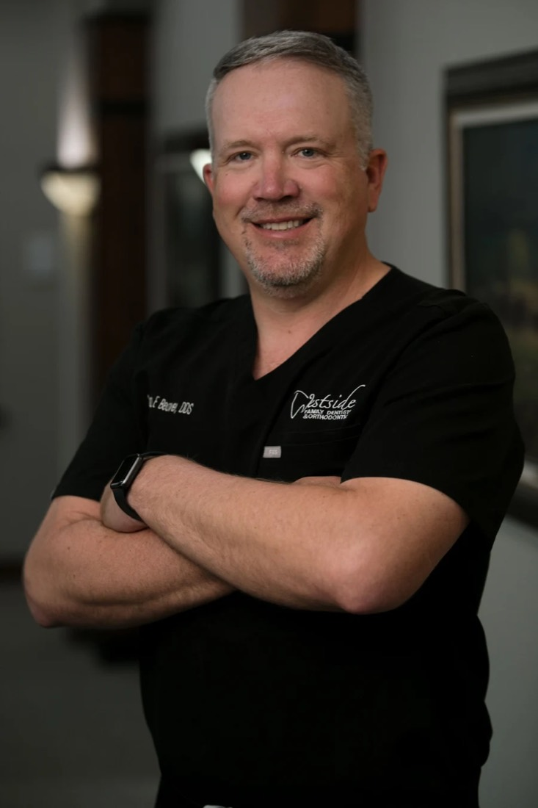
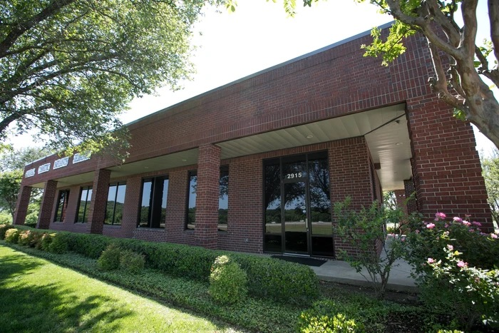
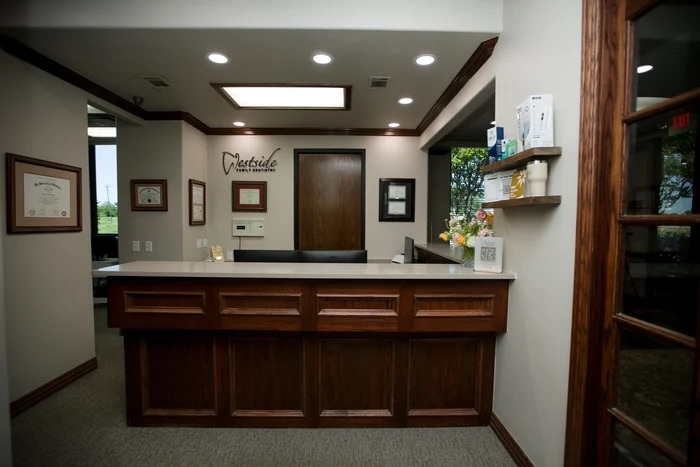

For over 50 years, the dentists of Westside Family Dentistry have helped Durant families achieve healthy smiles, from routine cleanings and braces to implants and complete smile reconstruction.
Comprehensive care, one friendly office on Westside Drive.
From preventive dental care to comprehensive reconstruction, our Durant dentists focus on dentistry that enhances the natural beauty and function of your smile while improving your oral and overall health.
Digital x-rays, 3D cone beam imaging, laser cavity detection and intraoral cameras let Dr. Beaver and Dr. Marcum look at every part of your smile before small issues become big ones.

50+years of Westside dentists caring for Durant smiles
2002Dr. Beaver earned his DDS at the OU College of Dentistry
3sedation options: nitrous oxide, oral and IV
16dentists, hygienists, assistants and coordinators
Meet your dentists
Two doctors, one philosophy.

Brandon E. Beaver, DDS
Dentist · Co-founder
“I strive to take care of every single patient that I encounter and treat them like they are a part of my own family.”
Dr. Beaver is one of the few dentists in Oklahoma licensed in IV sedation and implant surgery, and takes the best continuing education courses each year.
DDS, University of Oklahoma College of Dentistry, 2002
Taylor C. Marcum, DDS
Dentist · Co-founder
“Taking care of patients with a comprehensive approach … and feeling like they’re a member of our own family, really captures the essence of Westside Family Dentistry.”
After dental school, Dr. Marcum completed a one-year residency in advanced general dentistry focused on implants and cosmetic dentistry.
DDS, University of Oklahoma College of Dentistry, 2013
For patients who haven’t been to the dentist for some time, or who live with dental anxiety, a visit can feel overwhelming. Westside offers several ways to make it easier.
Nitrous oxide, oral and IV sedation, chosen with you before treatment.
Soft tissue dental lasers used during treatment to improve the patient experience.
Insurance claims filed for you, so you don’t have to navigate coverage alone.
Office tour
Step inside 2915 Westside Drive.

Westside Drive

Front deskTreatment roomWaiting room
Patient reviews
In our patients’ own words.
Every single person at this dentist office was amazing. They took my pain seriously, which led to me getting answers about my TMJ. They were sensitive, thorough, and professional.— Allison
Dr. Beaver and his staff were exceptional. Top notch care that had me feeling relaxed and comfortable in the chair.— Blake
What a wonderful experience! Dr. Marcum was very professional and informative. Shannon, the hygienist, gave me a spectacular cleaning. The whole office was friendly as well.— Elizabeth
Westside Family Dentistry has wonderful, friendly staff. They are very helpful, offer competitive costs and an array of services for various dental needs.— Courtney
We've been using Westside for over 10 years and I can't imagine going anywhere else. The staff is wonderful. We love Dr. Beaver!— Gena
Great staff and wonderful doctor! They are always so kind and helpful. I would recommend them to anyone looking for a dentist.— Anna
Good to know
Questions, answered.
Which dental insurance do you accept?
The practice is in-network with many dental insurance plans, including Health Choice and Delta Dental Premier. Please call 580-924-1234 and the team will confirm whether your plan is accepted.
I don’t have dental insurance. What are my options?
Ask the team about the in-office membership plan. The office also accepts cash, checks, credit cards, Cherry and CareCredit®.
I get nervous at the dentist. Can you help?
Yes. Westside offers nitrous oxide, oral sedation and IV sedation. Dr. Beaver is licensed in IV sedation and implant surgery.
Do you offer braces and Invisalign®?
Yes. Orthodontic care includes braces for children and adults, early orthodontic treatment and Invisalign® clear aligners.
Can I text the office?
Yes. You can call or text the same number: 580-924-1234.
When is the office open?
Monday to Friday, 8:00 am to 5:00 pm. The office is closed on Saturday and Sunday.